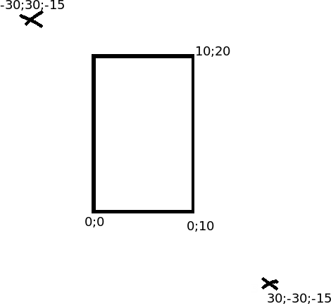
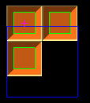
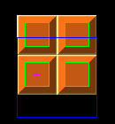

I wonder if you can help me with another related thing. I am not sure why light lights up wrong side of figures.
My game field is at 0,0 - 10,20 (think 2d wall). Everything is at z=0 except for light and camera.

This is how i place camera:
auto camera = _scene->GetChild("Camera");
auto camera_object = camera->GetComponent<Camera>();
camera_object->SetOrthographic(true);
camera->SetPosition(Vector3(0, 0, -30));
camera->LookAt(Vector3::ZERO);
camera->Translate(Vector3(5, 9.4f, 0));Now camera is in front of middle of game field. So far so good. Now i place the light:
auto lightNode = _scene->CreateChild();
lightNode->SetPosition(Vector3(-30, 30, -15));
auto light = lightNode->CreateComponent<Light>();
lightNode->LookAt(Vector3::ZERO);
light->SetLightType(LIGHT_DIRECTIONAL);
light->SetCastShadows(false);
light->SetRange(500);
light->SetFadeDistance(500);
As i understand light ends up at (-30, 30, -15) which is above/to the left/bit in front of game field. That means figures should have their top-left faces lit.
However:

Placing the light on (30, -30, -15) gives desired result:

Faces facing light get darker. What did i mess here up?